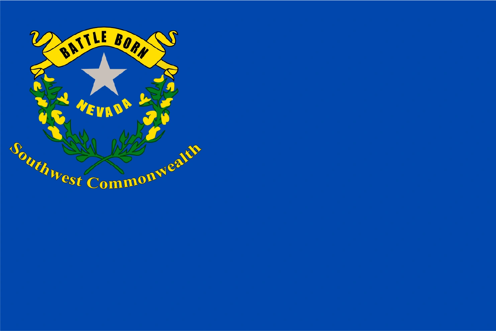

Divergence
分岐
「私のアイデアは、より良いプラズマガンを作ることではなく、核戦争後の世界の倫理をもっと探求することだ」
── ティム・ケイン（Fallout原作者）
分岐（Divergence）とは、現実世界とFalloutの世界の歴史が分かれた──「分岐した」──タイムライン上のポイントを指す用語です。Falloutの世界はパラレルワールド（代替宇宙）に設定されていることが公式に明言されています。分岐の正確な日時は意図的に曖昧にされていますが、シリーズ制作者の発言から、概ね第二次世界大戦の終結（1945年）前後に発生したと示唆されています。
Falloutシリーズは未来を舞台としていますが、現実世界の未来を反映するものではありません。その代わり、1950年代のSF的「明日の世界」のテーマとコンセプトを反映した世界です。本質的にFalloutの世界は、人間の倫理、信仰、そして「文明」と暴力・戦争への傾向の関係を探求し、分析し、時に風刺するための、折衷的なレトロフューチャーの舞台なのです。
設定
「明日の世界」
Falloutの世界には、ホバリングするお掃除ロボットが当たり前のように存在し、レーザーガンの使用は日常。自動車は1950年代のモートラマ・コンセプトカーのような巨大なテールフィン付きクロームの怪物──しかし核融合エンジンで動きます。
デスクトップコンピュータは存在しますが、1970年代後半の商用モデル程度の性能（プリミティブなグラフィックス、微小なメモリ）。大型コンピュータはいまだにリールトゥリール式テープストレージを使用する巨大な機械群です。しかしその最高峰であるZAXシリーズは、私たちの世界のスーパーコンピュータを凌駕する処理能力を持ちます。
衣服のスタイル、建築、インテリアは1950年代アメリカ文化の影響を強く受け続け、アール・デコやフューチュリズムのスタイルが主流であり続けました。ポスターや看板もこの時代を反映しています。
第二次世界大戦後、Fallout世界の人類は小型化された電子機器や「グリーン」技術の開発に注力する代わりに、巨大なスーパーコンピュータ（ZAXなど）、原子力のさらなる活用、コンパクトな核融合発電機、強化・小型化された核分裂技術、そして現実世界よりも高度なロボティクス、サイバネティクス、遺伝子工学に技術投資を集中しました。その結果、パワーアーマーやレーザー兵器の製造が可能になり、多くのアメリカ家庭でミスターハンディのような家事ロボットが使用されました。
1950年代に現実世界と共通していた反共産主義的で偏執的な視点は、Fallout世界では日常生活の一部であり続けました。リバティ・プライムの「死ぬ方が共産主義よりマシだ！」は1950年代の「赤より死を選べ」のもじりです。反共産主義プロパガンダは、ビデオゲーム（『Red Menace』）やコミック（『Commie-Kazi vs. Manta Man』）など大衆文化にも広く浸透していました。
エンターテインメント
ラジオがテレビより一般的なマスメディアであり、食品はTVディナー時代のもの（箱入りマカロニ＆チーズ、缶詰肉、ソールズベリーステーキのTVディナーなど）が基本です。ラジオ局は主にThe Ink Spots、ビング・クロスビー、The Andrews Sistersといった20世紀中盤のアメリカンクラシックを流していますが、これは40〜50年代以降のプレウォー録音がほとんど現存しないことも部分的に説明されます。
エルヴィス・プレスリーやエルトン・ジョンへの言及もあり、20世紀中後期の音楽やアーティストも存在しています。「Take Me Home, Country Roads」や「Ring of Fire」は別のアーティストによるカバーとして存在し、1950年代の音楽ジャンルが維持されながら代替的な音楽史をたどった可能性を示唆しています。
2070年代の歌手ヴェラ・キーズやディーン・ドミノは、レコード盤ではなくホロテープに録音を始めました。彼らの音楽や、ダニー・パーカー、ポール・クルーニーといったプレウォーのアーティストのポスターは、1950年代に関連するジャンルが大戦直前まで人気であり続けたか、もしくは復興を経験したことを示唆しています。
歴史的分岐のタイムライン
分岐の歴史的詳細と正確な発生時期は不明です。判明しているのは、1945年の第二次世界大戦終結後のある時点で発生したということです。ボストンのフリーダム・トレイルが現実世界で1951年に建設を開始し、Fallout世界にも存在することから、1951年以前の分岐はありえないと考えられます。
分岐後も2つのタイムラインは完全に異なるわけではありません。メガトンの住民が「ヒッピー」という言葉を使ったり、ヒドゥンバレー・バンカーの外に反核・平和スローガンの落書きがあったり、The Divideのプレウォーターミナルに反戦抗議者への軍の弾圧記録が残されているなど、1960年代に類似したカウンターカルチャーがFallout世界にも存在したことを示唆しています。
TVシリーズ版Falloutのジョナサン・ノーランとウォルトン・ゴギンズは、Falloutの世界を「ベトナム戦争もウォーターゲート事件もウッドストック型カウンターカルチャーも経験しなかったアメリカ」──「自国の罪と過ちについて自問自答したことのないアメリカ」と表現。アイゼンハワー時代の「swagger」が2077年の大戦まで続いた世界だと述べています。
1945年以前にも現実と異なる出来事はいくつか存在しますが、いずれも人類の歴史に大きな影響を与えたものではありません：
- 1918年：サンセット・サルサパリラ社設立（J.ソーヤーによれば「架空ブランドは分岐後のタイムラインにのみ存在する必要はない」）
- 1932年：ヴィッキーとヴァンスの犯罪ツアー（ボニーとクライドの最初の銀行強盗の2日前に開始）
- 1943年：USS Missouriの壁画に主砲塔が現実の3基ではなく4基描かれている
- 1798年：Uisce Beathaがウイスキー製造を開始
- 1768年以前：ボストンの銅細工師シェム・ドラウンが死亡、「悪魔の鉄」で作った剣と共に埋葬
- 1931年：Vim! Pop Incorporated設立
- 現実には存在しない1890年シリーズ国庫証券が存在
- 古代の前駆都市ウバールがルブ・アル・ハリ砂漠に存在
- 1603年以降：地球軌道上に異星人の宇宙船が存在し、人間の拉致と実験が行われている
政治
アメリカ合衆国の政治

分岐後のアメリカは劇的に変化しました。1969年、50州が13のコモンウェルスに統合（カリフォルニアの場合は分割）されました。ただし州自体も一定の主権や政治的自治を保持していたようです（Doc Mitchellの家のネバダ州旗や、コモンウェルス名ではなく州名が記載されたナンバープレートなど）。
分岐後の政治家についてはあまり知られていませんが、リチャード・ニクソンはFallout 2で言及されています（ただし1940年代にはすでに政治家として知られていた人物）。GNNニュース文書によれば（ロアとの矛盾が指摘され信頼性に疑問あり）、とある大統領が2075年2月に歩行者規則違反で弾劾されたとされています。またレーガン時代への言及もあり、ロナルド・レーガンがいつかの時点で大統領を務めた可能性があります。
Fallout 2のダニエル・バードとFallout 3のジャック・スミスは「共和党員」と述べていますが、Fallout: New Vegasでは「Republican」はニュー・カリフォルニア共和国の市民を指す呼称に転用されています。
人種差別は少なくとも軍事面では解消されたようです（トーマス・モーガン中尉など）。政治面でもサム・ブラックウェルが2070年代に上院議員に選出。女性の権利も進展し、エレン・サンティアゴ大佐のように女性が前線の戦闘任務に就いていました。
Fallout世界のアメリカ政府は非常に腐敗しており、冷戦時代の現実のアメリカ政府機関が秘密裏に行った実験（NASAのイルカLSDプロジェクト、CIAのMKUltra、ノースウッズ作戦、プルトニウムファイルなど）に類似した事業がVault-Tecの実験として再現されています。Fallout世界では冷戦は2051年まで続きましたが、資源戦争の間に同様の構図が繰り返されました。
世界政治
- ソビエト連邦：大戦時もまだ存続（現実では1991年解体）。しかし世界への影響力は縮小し、国際共産主義のリーダーの座は中国に奪われた。アメリカとは少なくとも中立的関係
- 中華人民共和国：毛沢東時代の姿をとどめ、現実の1970年代のような自由化・市場開放改革は起こらなかった。しかしアメリカに最も近い競争相手となる軍事・科学大国に成長
- 欧州連邦：統一国家として存在。2052年の資源戦争で石油確保のため中東に侵攻したが、2060年に油田枯渇で目的を失い撤退。直後に「欧州内戦」に崩壊し、大戦まで続いた
- 国際連合：欧州中東戦争と資源戦争の緊張により2052年7月に解散
- 脱植民地化：程度は不明だが、1950年代末までに多くの植民地が独立していたため、ある程度は進行したと推定
インフレーション
大戦前のアメリカは深刻なインフレを経験しました：
- ガソリン：1ガロン $8,500
- Red Rocketの核CoolantクラスA：1ガロン $119（クラスC：$121）
- コーヒーとドーナツ：$32
- Giddyup Buttercup（ロボット馬の玩具）：$16,000（2077年時点）
- 新聞（Boston Bugle、Capitol Post）：1部 $56
- 雑誌（Guns and Bullets、Unstoppables等）：$15〜$33
- ボウリング1ゲーム（General Atomics Galleria）：$5,000
- Chryslus Corvega：「お手頃」$199,999（2077年）
- Vaultプロジェクト：当初$4,000億（122基）→ 2077年には$6,450億に膨張
ガソリン価格は現代の基準では極端に見えますが、その他の価格は現在から大戦（2077年）までの数十年間に期待される通常のインフレと概ね一致しています。
石油
大戦と資源戦争の根本的な原因は、Fallout世界で2052年までに世界の石油備蓄が枯渇したことです。これは1956年に提唱された有名なピーク・オイル理論に基づいています。
現実世界でも1973年のヨム・キプール戦争時にOPECが石油価格を400%引き上げた第一次石油危機など、石油をめぐる紛争がFalloutのイベントと並行しています。
興味深いことに、Fallout世界にはプレウォーの代替エネルギー源（プロメテウス石炭、HELIOS One太陽光、Greenway Hydroponics、ゲッコー核発電所、フーバー・ダムなど）が存在しており、石油危機がなぜそこまで深刻だったのかは完全には説明されていません。
アメリカの都市と場所
Fallout世界の都市デザインは現実とは大きく異なり、見覚えのあるランドマークが存在するものの、レイアウトは表面的にしか似ていないことが多いです。
13のコモンウェルス
プレウォーのアメリカは50の州に加え13のコモンウェルスを持ち、州と連邦政府の間の中間的な統治レベルとして機能しました。マサチューセッツ州庁のプレートには形成年として1969年が記されています。この変更はアメリカ国旗の変更と対応し、13のコモンウェルスを表す13の星が円形に配置されたデザイン（ベッツィー・ロス旗に類似）に中央の連邦政府を表す1つの星が加えられています。
ワシントンD.C.
- プレウォーの建築の大半が1940〜50年代のアール・デコと1950〜60年代のモダニズム
- 現実世界のスミソニアン国立航空宇宙博物館はテクノロジー博物館に置き換え
- 国会議事堂の正面階段の構造が異なる
- 地下鉄は3路線（Red、White、Blue）のみ（現実は6路線）
- ワシントン記念塔に鉄骨フレームが存在（現実には存在しない）
- ペンタゴンの位置が異なり、ポトマック川のすぐ左岸に配置
- 高架モノレールが市内を走行
- 1950〜60年代以降に建設された多くの記念碑や建物（ベトナム戦争記念碑、第二次世界大戦記念碑、ケネディ・センター等）が存在しないか完全に忘れ去られている
マサチューセッツ
ケンブリッジ
- MITはコモンウェルス工科大学に名称変更
ボストン
- 中央部を巨大な高架高速道路が縦横に走る（地上85〜100フィート）
- フューチュリスティックな超高層ビルが都市景観を支配
- ボストン空港のレイアウトが完全に異なり、「ボストン国際空港」と呼称（現実のローガン国際ではなく）
- スコレー・スクエアが存在（現実では1962年に取り壊し）
- クインシー・マーケットが存在しない
- ボストンの公共交通機関の管理組織はMTA（現実では1964年にMBTAに改名）
ネバダ
- ラスベガス（ニュー・ベガス・ストリップ）では多数の現実のカジノや建物が存在しない、または別の建物に置き換えられている
- マッカラン空港は要塞化され、高いコンクリート壁で囲まれている
ペンシルベニア（ピッツバーグ）
- 鉄鋼産業が成長し、市内上部に工場と鉄工所が拡大（現実では衰退し、製鋼所は市外に移転）
- ピット・ブリッジは改修版（10th Streetブリッジをモデル化）
- カテドラル・オブ・ラーニングがダウンタウン中心部に位置（現実ではオークランド地区に所在）
カリフォルニア
- ベーカーズフィールド（ネクロポリス）：現実には存在しない超高層ビルがそびえる大都市
- ロサンゼルス：超高層ビルが複数列に並ぶ大規模な開発都市。廃墟となった超高層ビル群から戦後は「ボーンヤード」と呼ばれた
- ハリウッド・サインの下にヌカ・コーラのスポンサーネオンサイン
メリーランド（ポイント・ルックアウト）
- 灯台のデザインが現実と大きく異なる
- 1950年設立とされるポイント・ルックアウトの町は現実には存在しない
- ジョン・スミスのポイント・ルックアウト到達が1612年（現実では1608年）
メイン州（マウント・デザート島）
- ファー・ハーバー周辺の海岸線が現実よりもはるかに高い
ウェストバージニア
- ゲームプレイの都合上、場所の地理が大幅に調整されている（スプルースノブが地図の中心に配置されているが、現実ではバージニア州境近く）
- ミスター・ファジーのキャラクターデザインが現実のカムデン・パークと異なる
- ハンティントンとウィーリング（ウェストバージニア最大の都市の2つ）がゲームに登場しない
- ウェストバージニア大学はVault-Tec大学に名称変更
- グリーンブライアー・リゾートはホワイトスプリング・リゾートに改名。地下のバンカーは現実よりもVaultに近い外観
- ニュー・リバー・ゴージ・ブリッジがフラットウッズのすぐ上に出現（現実ではもっと離れている）
- グリーンバンク望遠鏡は丘の上に配置（現実では広い野原）。ゲーム内名称はナショナル・アイソレーティド・レディオ・アレイ
- パンプキン・ハウスの位置が北東に大幅移動
ポイント・プレザント
- シルバー・ブリッジの後継橋がシルバー・メモリアル・ブリッジではなく「ノース・ロード・ブリッジ」と呼称
- モスマン博物館のモスマン像のデザインが現実と異なる（Fallout版は翼と腕が一体化したデザインで、目撃証言に近い）
オハイオ
- アセンズの大学がホッキング大学（現実のオハイオ大学ではなく）
- アセンズ精神病院は2048年の嵐で修復不可能なほど損壊
- フォート・スチューベンが歴史的遺跡として現存（現実ではスチューベンビル市がその跡地に建設）
- バーニング・スプリングスは砂漠のような環境（「ザ・ラスト」と呼ばれる有毒化学物質による環境破壊が原因）
アラスカ
- トランス・アラスカ・パイプラインがカナダを通過するセクションを持つ（現実では南北に貫通するのみ）
テクノロジー
小型化しなかったコンピュータ
現実世界との最大の分岐の一つは、デジタルコンピュータと電子機器の急速な小型化が優先されなかったことです。Falloutのコンピュータは全て旧式のリールトゥリール型で広大な部屋を占拠。デスクトップの個人用コンピュータは真空管とトランジスタのハイブリッドで巨大、ディスプレイはモノクロの小さなCRT（液晶フラットパネルは存在しません）。しかし極めて堅牢に設計されており、大戦から210年後でも過酷な環境で完璧に動作する例が見つかります。
データはホロテープまたはホロディスクに三次元デジタルイメージとして電磁的に保存されます。処理能力は非常に高度ですが、ピップボーイやアンドロイドを除き大規模な小型化技術は開発されませんでした。ユーザーフレンドリーなGUIオペレーティングシステムも商用化されず、UIは基本的なコマンドラインのまま。SF映画的な音声インターフェースが一部のシステムで開発され、GUIを不要にしました。
テレビやラジオも1960年代初頭のレベルを超えず、テレビはモノクロが主流（ただし一部のRadiation King製テレビにはカラー調整ノブがあり、Fallout 76ではカラーテレビの例あり）。カメラも1950〜60年代のような大型バルブ式ですが、Codac R9000やProSnap Deluxeのように即時現像が可能なモデルも存在しました。一方、CCTV型の監視カメラは現実世界同様にコンパクトです。
アップロード・ダウンロード、Eメール、ネットワーク通信への言及も見られ、マイクロプロセッサ技術では遅れを取りながらも、ロボティクス、インターネットの前身であるイントラネット、軌道通信衛星などのコンピュータサイエンスは順調に発展しました。
原子の力
Fallout世界では核エネルギーが原子爆弾だけでなく、原子炉として電力源に活用されました。私たちの世界のような大規模核分裂炉だけでなく、都市や町の地下に設置されるより小型・一般的な発電所が多数存在しました（ニューヨークのメルトダウン寸前の原子炉やオールド・オルニー地下のOlney Powerworksなど）。
核融合は現実世界よりはるかに早く実用化され、内燃機関が担う役割（自動車エンジン、小型発電機）に加え、フィッションバッテリーやマイクロフュージョンセル（軍事用中エネルギー兵器の標準電源）にまで小型化。多くの戦前の電源は大戦から数百年後でも稼働しています。
この核への執着は、放射性同位体をヌカ・コーラ・クアンタムに添加するほど極端で、最終的に戦前社会の破壊そのものを引き起こしました。核技術の普及に伴い、放射線被曝への対策として、放射線治療・免疫技術が開発されました（現実世界では非常に初期の実験段階に留まる技術）。
再生可能エネルギー
プレウォーのアメリカは核エネルギーを好みましたが、風力タービン、水力ダム、太陽光発電などの再生可能エネルギー技術も開発されていました。ネバダ州にはフーバー・ダム、南ネバダ風力発電所、ポセイドンエナジーのHELIOS One太陽光発電所、ネリス空軍基地のソーラーパネルアレイが存在。太陽光ベースの兵器（ARCHIMEDES I・II）も開発されました。マウント・デザート島（メイン州）には実験的風力発電所があり、親会社GDA Fusionが資金提供した核発電よりも効率的でした。
軍事技術
核兵器
Fallout世界の核兵器開発は、メガトン級兵器が退役し、代わりに大量の小型キロトン級兵器が配備される方向に進みました。重力爆弾と大陸間弾道ミサイル（ICBM）の両方が使用されていましたが、どちらがより多く使用されたかは不明です。航空機搭載核兵器は1940〜50年代の旧式爆弾の形状を維持しました。
ミスター・ハウスは77発の核ミサイルからニュー・ベガスを防衛したと述べており、中国は相当数の弾道ミサイル式核弾頭を保有していたことを示唆しています。
実弾火器
Fallout独自の設計と現実世界の武器に基づくデザインが混在。ピカティニーレールはアサルトカービンに見られますが、取り付け可能なアタッチメントは少数。ハンドガンは20世紀初頭のデザインを維持。重火器（ミサイルランチャー、ファットマン）はサイドマウントフォアグリップや空気圧弾薬装填システムなど独自設計。現実では非実用的な核カタパルトや携帯式ミニガンが前線部隊に支給されました。現実では珍しい10mm弾が広く使用される一方、.50 BMGや.45 ACPはより専門的な用途に限定。
エネルギー兵器
レーザーとプラズマガンが存在し、ターゲットを灰の山や液状化した水溜まりに変える能力を持ちます。AERシリーズレーザーライフル、AEPシリーズレーザーピストル、ガトリングレーザーなどが軍事配備。ほとんどのエネルギー兵器はマイクロフュージョンセルを使用。プラズマ兵器は電磁石とトロイドを使用してプラズマを射出。エイリアンのエネルギー兵器（エイリアンブラスター）の証拠も。
軌道兵器
Fallout世界には4つの主要な軌道兵器が存在：
• Highwater-Trousers：軌道ミサイルプラットフォーム（Fallout 3）
• Bradley-Hercules：高性能爆薬ミサイル型軌道プラットフォーム（Broken Steel）
• ARCHIMEDES II：レーザー型軌道兵器（Fallout: New Vegas）
• Kovac-Muldoon：偵察兼補給・軌道打撃衛星（Fallout 76）
現実世界で唯一配備された軌道兵器はソ連の8K69 FOBS（部分軌道爆撃システム）のみで、1982年にSALT II条約に従い段階的に廃止されました。
ロボティクス
Fallout世界はロボティクス技術に秀でており、プレウォー社会にロボットが浸透していました。ペットの散歩、食料品の買い出し、子供の世話、有名人のモノマネ、軍事戦闘まで、あらゆる役割を担いました。二足歩行のプロテクトロン、履帯式やホバリング式のロボブレイン、ミスターハンディ/ガッツィー、そして巨大なリバティ・プライムまで多種多様。多くがフィッションバッテリーとエネルギーセルで動くため、2077年の核の炎を生き延びました。
航空学
航空機はFallout世界ではあまり見かけませんが、そのデザインは1940〜50年代の終戦直後から大きく変わっていません。ジェット推進は民間・軍事両方で開発されましたが、戦闘機のデザインは1950年代から進化しておらず、空対空ミサイルや空対地ミサイルの証拠はなく、空中戦は朝鮮戦争時代のような機銃によるドッグファイトだったと考えられます。
ヘリコプターは直接登場しないものの、ヘリパッドの存在からある程度普及していたことが分かります。ベルチバードは「クレイジーなヘリコプター」と表現されています。
有人宇宙飛行も実現されており、1961年に最初の宇宙動物は、ロシアの野良犬ライカではなく、アメリカの家猫ミスター・ペブルズ。同年5月5日にアメリカが初の有人宇宙ミッションを実施したとされ、1969年7月16日にはアメリカ人宇宙飛行士が月面に着陸。2077年までには弾道ミサイル、衛星兵器、再使用型スペースプレーンが運用されていました。
プラスチック
Fallout世界では、石油不足のためプラスチックが現実世界よりもはるかに普及しておらず、ガラスや金属合金が主要な素材です。注射器はガラス製で再使用可能、スティムパックは金属ケース内のガラスバイアルに入っています。ただし軍はプラスチックポリマーを広く採用しており、コンバットアーマーやT-51bパワーアーマーは先進的な防御ポリマーで作られています。Fallout 4ではプラスチック容器がやや増えていますが、それでも現実よりはるかに少ないです。
スポーツ
野球
ボストンは2077年のワールドシリーズでテキサスと対戦──1918年以来159年ぶりの優勝を目指していました。現実世界では2004年、2007年、2013年、2018年に優勝しています。Fallout世界では「バンビーノの呪い」がまだ解けていなかったことになります。
ダイヤモンド・シティ（フェンウェイ・パーク内に建設された城塞都市）のレフトフィールドスタンドには退役番号が掲げられており、1、4、6は現実でも退役していますが、現実で退役している8、9、14、27、45は存在せず、現実では退役していない11、13、21、33が退役しています。
そして10月23日──ワールドシリーズ第4戦が予定されていたまさにその日に、核の炎が全てを終わらせました。
フットボール
- モーターサイクル・フットボールが存在し、初期のレザーアーマーはこのスポーツ用に設計された
- アパラチアの高校のフットボール装備は1930年代の現実のデザインに類似、一方シーザーズ・レギオンの装備はより現代的
- GNNトランスクリプト（信頼性に疑問あり）によれば、スーパーボウルCXII（112回）がリトルロック・セインツ vs アナハイム・ジェッツで2075年に開催。リトルロック・セインツは現実のニューオリンズ・セインツに相当
オリンピック
オリンピックはFallout世界でも継続して開催されました。唯一の直接言及は2060年オリンピックで、将来のVault 76居住者A.ヴィンスが十種競技で銅メダルを獲得。パイオニアスカウトのアスリート試験にはオリンピックに関する質問が現在形で記述されており、2076年のプレザント・バレー・スキーリゾートのターミナルにも「オリンピック級ではない」というスキー場への言及があり、大戦直前までオリンピックが開催されていた可能性を示唆しています。
その他
- アメリカ合衆国宇宙管理局（USSA）がNASAに代わる宇宙機関
- カール・ベルが初の宇宙飛行士
- 放射線の測定単位としてグレイではなくラド（rad）が採用されている
ギャラリー
Falloutシリーズの「なぜこうなっているのか」を全て解き明かすメタ記事。
この世界が面白いのは、単なる「1950年代風未来」ではないこと。
トランジスタが小さくならなかった──たったこれだけの分岐が、
スマートフォンのない世界、液晶のない世界、しかしパワーアーマーとレーザーガンがある世界を生み出した。
ジョナサン・ノーランの見解が最も核心を突いている：
「自国の罪について自問自答したことのないアメリカ」。
ベトナム戦争もウォーターゲートも経験せず、
1950年代のアメリカン・ドリームが2077年まで続いた世界。
都市の細部一つ一つに分岐の痕跡がある。
ワシントン記念塔の鉄骨フレーム、存在しないベトナム戦争記念碑、
3路線しかない地下鉄、モノクロのままのテレビ。
そしてワールドシリーズ第4戦の日──10月23日──に核が落ちる。
159年ぶりの優勝が叶うはずだった日に、全てが灰になった。
これほど残酷で、これほどFalloutらしいディテールはありません。
This article was created by translating and editing Divergence from Nukapedia: The Fallout Wiki.
Licensed under the Creative Commons Attribution-Share Alike License (CC BY-SA 3.0).
コミュニティ維持のため、寄付を受け付けております。
> COMMENTS